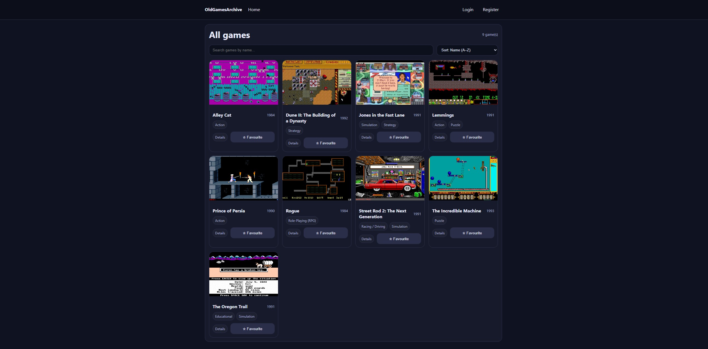
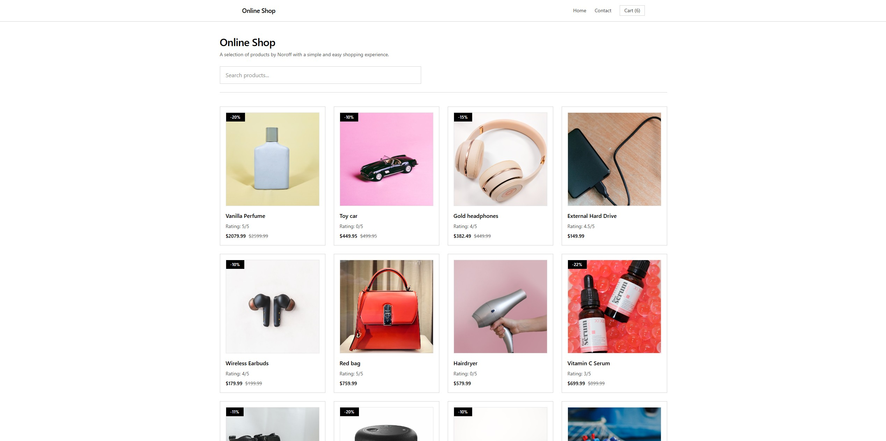
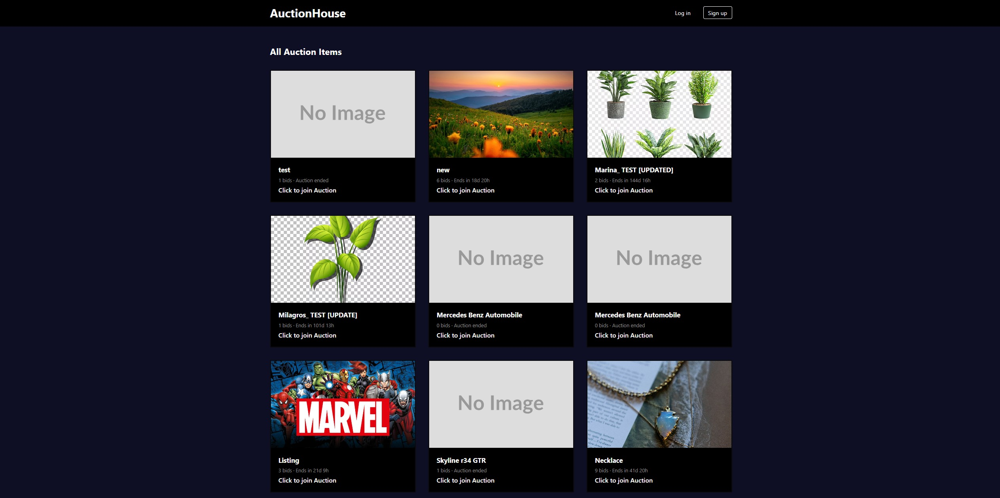

Yeabsera Gabriel
Front-End Developer
Hi, my name is Yeabsera. I am a UX/UI designer and front-end development student with three years of experience studying UX/UI Design and Front-End Development at Noroff. My goal is to build a complete understanding of the design and development process, from wireframes and user stories to responsive, accessible and functional web applications using HTML, CSS, JavaScript and TypeScript.
I enjoy creating aesthetic, user-friendly interfaces and working in teams where people can use their strengths to build professional digital products. I am always looking for opportunities to learn, grow and collaborate.
Skills
Tools & Technologies
Technologies and tools I use when building responsive, accessible and user-focused web experiences.
Languages
HTML
CSS
JavaScript
TypeScript
Frameworks & Libraries
React
Next.js
Tailwind CSS
Bootstrap
Tools & Workflow
Git
GitHub
Vite
REST APIs
FETCH API
Figma
Responsive Design
WCAG Compliant Code
Projects
Featured Work
Three selected demo platforms created using NOROFF APIs during my Front-End Development studies


Contact
Let’s connect
I’m open to opportunities, collaborations and conversations about front-end development.